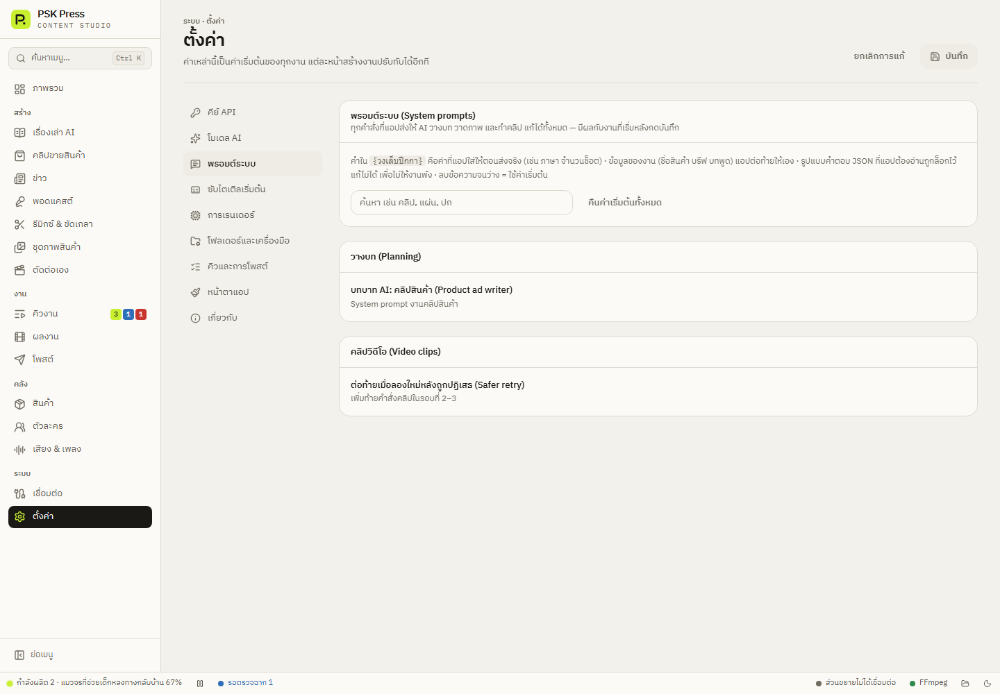

ระบบ
พรอมต์ระบบ
แก้คำสั่งทุกข้อที่แอปส่งให้ AI ได้เอง — บทบาทของ AI กฎการเขียนบท การวาดแผ่นสตอรี่บอร์ด การทำคลิป และวิธีพูดถึงคนในภาพ
ที่ ตั้งค่า → พรอมต์ระบบ มีคำสั่ง 40 ข้อ ครอบคลุมทุกจุดที่แอปคุยกับ AI แบ่งเป็น 6 กลุ่ม ค่าเริ่มต้นเป็นคำสั่งที่ทดสอบกับงานจริงแล้ว ถ้าไม่แก้อะไร แอปจะทำงานเหมือนเดิม


กลุ่มของพรอมต์
| กลุ่ม | ตัวอย่าง |
|---|---|
| วางบท (Planning) | บทบาท AI ของงานเรื่องเล่า คลิปสินค้า ข่าว พอดแคสต์ รีมิกซ์ · กติกาเปิด-ปิดคลิป · วิธีแทรกสินค้า 4 แบบ |
| แผ่นสตอรี่บอร์ด (Storyboard sheet) | บทบาทผู้วางแผ่น · กติกาความยาวบทต่อแผ่น · ประโยคปิดการขาย · การขอให้ย่อบท · การวาดแผ่น · คำสั่งทำคลิปจากแผ่น |
| คลิปวิดีโอ (Video clips) | การพูดถึงพรีเซนเตอร์แบบ “คล้าย” · ข้อความเพิ่มตอนลองใหม่หลังถูกปฏิเสธ · การเคลื่อนไหวเริ่มต้น · บทพูดและเสียงในคลิป |
| รูปภาพ (Images) | คนในภาพ (มี/ไม่มีรูปนายแบบ) · ชุดภาพโฆษณา · ภาพปก · แผ่นตัวละคร · ภาพพอดแคสต์ |
| กฎร่วม (Shared rules) | กฎการเขียนคำบรรยายภาพ (ห้ามใส่ชื่อตัวละคร) · กฎแผ่นสตอรี่บอร์ด (ห้ามโลโก้แพลตฟอร์มและไอคอน) |
| อื่น ๆ (Other) | เขียนแคปชัน · ตรวจคำผิดในซับ · คิดไอเดีย · อ่านลักษณะคนจากรูป |
แก้พรอมต์
- พิมพ์ในช่องค้นหา เช่น “คลิป” “แผ่น” “ปก” หรือเลื่อนหาในกลุ่ม แล้วกดชื่อพรอมต์เพื่อเปิด
- ใต้ชื่อบอกว่าพรอมต์นี้ใช้ตอนไหน แก้ข้อความในกล่องได้เลย
- พรอมต์ที่แก้แล้วจะมีป้าย แก้แล้ว ด้านบนนับว่าแก้ไปกี่รายการ
- กด บันทึก มุมขวาบน มีผลกับงานที่เริ่มหลังจากนี้
ค่าในวงเล็บปีกกา
คำอย่าง {lang} {per} {seconds} คือค่าที่แอปเติมให้ตอนส่งจริง ใต้กล่องมีรายการ “ค่าที่แอปใส่ให้” ของพรอมต์นั้น เช่น:
{lang}— ภาษาของงาน เช่น Thai{per}— จำนวนช็อตต่อแผ่น{seconds}— ความยาวคลิป (วินาที){lo}–{hi}— จำนวนตัวอักษรต่ำสุด–สูงสุดของบทต่อแผ่น{line}— บทพูด หรือประโยคปิดการขาย{voice}— ลักษณะเสียงผู้พูด{style}— สไตล์ภาพ
ถ้าลบค่าไหนออก แอปจะเตือนว่า “ไม่มี {…} ในข้อความ — แอปจะไม่ใส่ค่านี้ให้ AI”
คืนค่าเริ่มต้น
- คืนค่าเริ่มต้น ใต้แต่ละพรอมต์ — คืนเฉพาะข้อนั้น
- ลบข้อความจนว่าง — ใช้ค่าเริ่มต้นเหมือนกัน
- คืนค่าเริ่มต้นทั้งหมด ด้านบน — คืนทุกข้อ (มีถามยืนยัน)
ส่วนที่แก้ไม่ได้ (ตั้งใจล็อกไว้)
- รูปแบบคำตอบ JSON — แอปต้องอ่านคำตอบของ AI เป็นโครงสร้างที่แน่นอน (บท ฉาก ชื่อเรื่อง แคปชัน) ถ้าแก้ได้ งานจะพัง
- ข้อมูลของงาน — ชื่อสินค้า รายละเอียด บรีฟ บทพูด หัวข้อ แอปต่อท้ายพรอมต์ให้เอง ส่วนที่อยากกำหนดต่องาน ใช้ช่อง “คำสั่งเพิ่มเติมถึง AI” หรือ “บรีฟการเล่าเรื่อง” ในหน้าสร้างงาน
ตัวอย่างการปรับที่ได้ผล
- ให้คลิปขายของพูดแบบเพื่อนเล่า — แก้ “บทบาท AI: คลิปสินค้า” หรือ “บทบาท AI: วางแผ่นสตอรี่บอร์ด” เพิ่มว่า speak like a close friend recommending, casual Thai, no formal selling words
- ห้ามภาพบางอย่างทุกงาน — เพิ่มใน “กฎการเขียนคำบรรยายภาพ” เช่น No alcohol, no cigarettes
- Flow ปฏิเสธบ่อย — ปรับ “ต่อท้ายเมื่อลองใหม่หลังถูกปฏิเสธ” หรือ “คนในคลิป: มีรูปพรีเซนเตอร์” ให้บรรยายกว้างขึ้น
- แคปชันสไตล์ร้าน — แก้ “บทบาท AI: แคปชัน” เช่น You write social-media post copy in {lang} for a friendly local shop, end with a question to invite comments.
พรอมต์ส่วนใหญ่เป็นภาษาอังกฤษ เพราะโมเดลภาพและวิดีโอทำตามภาษาอังกฤษได้ดีที่สุด เขียนภาษาไทยก็ได้ แต่ส่วนที่ให้ AI “วาด” หรือ “ทำคลิป” แนะนำให้เป็นภาษาอังกฤษ